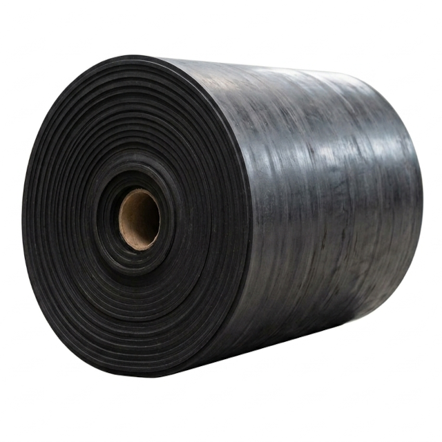

Lençóis de Vedação Industriais
Projetados para confecção de juntas, revestimentos de bancadas, isolamento elétrico, vedação de superfícies e proteção mecânica. Fabricados em diversos elastômeros e compostos de alta qualidade, garantem excelente resistência ao rasgo, estanqueidade e durabilidade contra agentes químicos, intempéries e abrasão nas mais severas aplicações industriais.
Variações Disponíveis

Lençol de Borracha Industrial
Mantas e lençóis elastoméricos desenvolvidos para corte de juntas de vedação, revestimento de superfícies e amortecimento de impactos. Disponíveis em diferentes polímeros (SBR, NBR, EPDM, Neoprene, Silicone e Viton), com ou sem inserção de telas de reforço têxtil.
Solicitar CotaçãoLençol de Borracha Industrial
Mantas e lençóis elastoméricos desenvolvidos para corte de juntas de vedação, revestimento de superfícies e amortecimento de impactos. Disponíveis em diferentes polímeros (SBR, NBR, EPDM, Neoprene, Silicone e Viton), com ou sem inserção de telas de reforço têxtil.
Solicitar CotaçãoLençol de Borracha Industrial
Mantas e lençóis elastoméricos desenvolvidos para corte de juntas de vedação, revestimento de superfícies e amortecimento de impactos. Disponíveis em diferentes polímeros (SBR, NBR, EPDM, Neoprene, Silicone e Viton), com ou sem inserção de telas de reforço têxtil.
Solicitar CotaçãoFicha Técnica Geral - Lençóis de Vedação Industriais
| Especificação | Detalhes |
|---|---|
| Compostos Elastoméricos: | SBR (Natural/Sintético), NBR (Nitrílica), EPDM, Neoprene (CR), Silicone (VMQ), Viton (FKM) e Borracha Pulsômetro. |
| Opções de Reforço Interno: | Sem lona (puro) ou com inserção de 1 a 4 lonas têxteis (Poliéster/Algodão) para alta resistência à tração e ao rasgo. |
| Espessuras Padronizadas: | De 1,0 mm a 12,7 mm (1/16" a 1/2") — sob consulta para espessuras especiais. |
| Largura e Apresentação: | Rolos com largura padrão de 1.000 mm e 1.200 mm ou cortados em tiras/placas sob medida. |
| Dureza Shore A: | 50 a 80 Shore A (conforme o tipo de composto e aplicação requerida). |
| Faixa de Temperatura: | -30°C a +80°C (SBR/NBR) / -40°C a +130°C (EPDM) / -60°C a +200°C (Silicone) / -20°C a +200°C (Viton). |
| Compatibilidade Química: | Resistente a óleos minerais, graxas, água, vapor, intempéries, ozônio, ácidos diluídos e produtos químicos agressivos (de acordo com o composto). |
| Aplicações Típicas: | Corte de juntas estáticas, revestimentos anticorrosivos e antidesgastantes, isolamento acústico/elétrico, cortinas de proteção e raspadores. |
| Normas Atendidas: | ASTM D2000, DIN 7715, ISO 3302 e opções com aprovação FDA para contato com alimentos. |